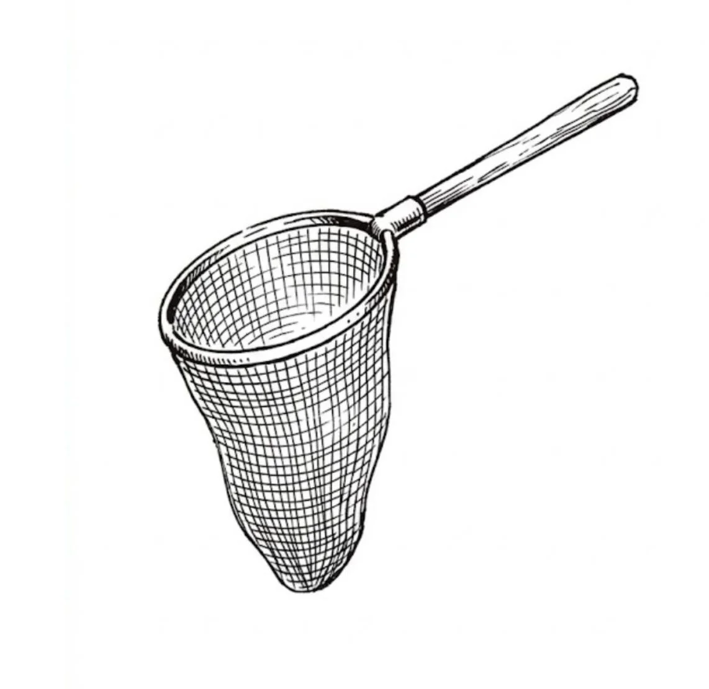

크레이그의 그물이 거세게 홱 당겨지는 바람에 하마터면 팔이 빠질 뻔했다. 은색 그물망에서 쉭 소리를 내며 연기가 피어올랐다. 고무 타는 냄새가 났다.
[Craig’s net jerked hard, nearly pulling his arm out of its socket. Smoke hissed from the silver mesh strings. It smelled like burning rubber.]
“이런!” 크레이그는 낚싯대와 씨름하듯 두 손으로 움켜쥐며 소리쳤다.
[”Whoa!” Craig shouted, wrestling the pole with both hands.]
평소에는 잊어버린 전화번호나 잃어버린 장보기 목록처럼 따분하고 희뿌연 안개 같은 것들만 잡혔다. 하지만 이번엔 달랐다. 이번 사냥감은 묵직한 데다 거세게 저항했다. 그물 안에서 밝은 황금빛 구체가 마치 갇힌 새처럼 그물망에 쾅쾅 부딪혔다.
[Usually, he just caught gray mists—boring things like forgotten phone numbers or lost grocery lists. But this was different. This catch was heavy, and it was fighting back. inside the net, a ball of bright gold light slammed against the strings like a trapped bird.]
크레이그는 빛나는 구체를 재빨리 유리병에 밀어 넣고 뚜껑을 꽉 잠갔다. 유리병은 순식간에 손을 델 만큼 뜨거워졌다.
[Craig quickly shoved the glowing ball into a glass jar and screwed the lid on tight. The glass instantly became hot to the touch.]
그는 안을 들여다보았다. 황금빛은 단순히 소용돌이치는 것이 아니라 어떤 그림을 보여주고 있었다. 다리가 반으로 뚝 끊어지는 모습이 보였다. 기차가 시커먼 강물 속으로 추락하는 모습이 보였다. 불길이 보였다.
[He peered inside. The golden light wasn’t just swirling; it was showing a picture. He saw a bridge snapping in half. He saw a train falling into a dark river. He saw fire.]
“이건 기억이 아니야.” 크레이그는 이마에 흐르는 땀을 닦아내며 나직이 속삭였다. “아직 일어나지 않은 일이라고.”
[”This isn’t a memory,” Craig whispered, wiping sweat from his forehead. “This hasn’t happened yet.”]
그는 관리국 지하 사무실로 뛰어 들어갔다. 그곳엔 조 여사가 두꺼운 안경을 고쳐 쓰며 앉아 있었다. 그녀가 고개를 들어 올리자 안경 렌즈에 달린 작은 톱니바퀴들이 찰칵 소리를 냈다.
[He ran into the Bureau’s basement office. Ms. Cho sat there, adjusting her thick glasses. The tiny gears on her lenses clicked as she looked up.]
“조 여사님!” 크레이그는 뜨겁게 달아오른 유리병을 책상 위에 쾅 내려놓았다. “이것 좀 보세요! 기차 충돌 사고예요. 하지만 그 기차는 화요일이나 되어야 운행하잖아요!”
[”Ms. Cho!” Craig slammed the hot jar on her desk. “Look at this! It’s a train crash. But the train doesn’t run until Tuesday!”]
조 여사는 겁먹은 기색이 아니었다. 오히려 귀찮다는 표정이었다. 그녀는 도장을 들어 서류에 쿵 찍어 눌렀다.
[Ms. Cho didn’t look scared. She looked annoyed. She picked up a stamp and hit a piece of paper. THUMP.]
“말도 안 돼.” 그녀가 말했다. “우린 과거를 수집하는 거야, 크레이그. 미래가 아니라고. 그냥 오류일 뿐이야. 갖다 버려.”
[”Impossible,” she said. “We collect the past, Craig. Not the future. It’s just a glitch. Throw it in the trash.”]
“하지만 사람들이 다칠 거라고요!” 크레이그가 따졌다. “어서 알려야 해요!”
[”But people are going to get hurt!” Craig argued. “We have to warn them!”]
“우리 소관이 아니야.” 그녀는 문 쪽을 가리키며 말했다. “나가서 하던 일이나 해.”
[”Not our job,” she said, pointing to the door. “Go back outside.”]
크레이그는 유리병을 낚아채고는 씩씩거리며 거리로 나갔다. 화가 치밀어 올랐다. 하지만 보도에 발을 내디디는 순간, 머리 위에서 우지끈하는 굉음이 울려 퍼졌다. 거대한 나무가 반으로 쪼개지는 듯한 소리였지만, 그 소리는 하늘에서 들려왔다.
[Craig grabbed the jar and stormed out to the street. He was angry. But as soon as he stepped onto the sidewalk, a loud CRACK echoed above him. It sounded like a giant tree snapping in half, but it came from the sky.]
지나가던 사람들이 걸음을 멈추고 하늘을 올려다보았다. 구름이 갈기갈기 찢어지고 있었다.
[Passersby stopped and looked up. The clouds were ripping open.]
갑자기 황금빛이 둥둥 떠내려오는 게 아니라 곤두박질치며 쏟아져 내리기 시작했다.
[Suddenly, gold light didn’t just float down—it crashed down.]
빛나는 황금 덩어리 하나가 주차된 차의 앞유리에 쳐박혔다. 콰창. 또 다른 조각은 핫도그 가판대 옆에 서 있던 남자를 강타했다. 남자는 아직 부러지지도 않은 뼈의 고통을 느끼며 비명을 지르고 다리를 감싸 쥔 채 쓰러졌다.
[A chunk of glowing gold smashed into a parked car’s windshield. CRASH. Another piece hit a man standing near a hot dog stand. The man fell to his knees, screaming and clutching his leg, feeling the pain of a broken bone that hadn’t broken yet.]
재앙이 비처럼 쏟아지고 있었다.
[It was raining disasters.]
크레이그는 아수라장이 된 거리 한복판에 서 있었다. 허공은 미래의 비명과 금속이 부서지는 소음으로 가득 찼다. 그는 자신의 작은 은색 그물을 한번 쳐다보고는, 무너져 내리는 하늘을 올려다보았다.
[Craig stood in the middle of the chaos. The air was filled with the sounds of future screams and crashing metal. He looked at his small, silver net, then up at the breaking sky.]
“더 큰 병이 필요하겠군.” 그는 이렇게 내뱉고는 쏟아지는 폭풍 속으로 곧장 뛰어들었다.
[”I’m going to need a bigger jar,” he said, and ran straight into the falling storm.]